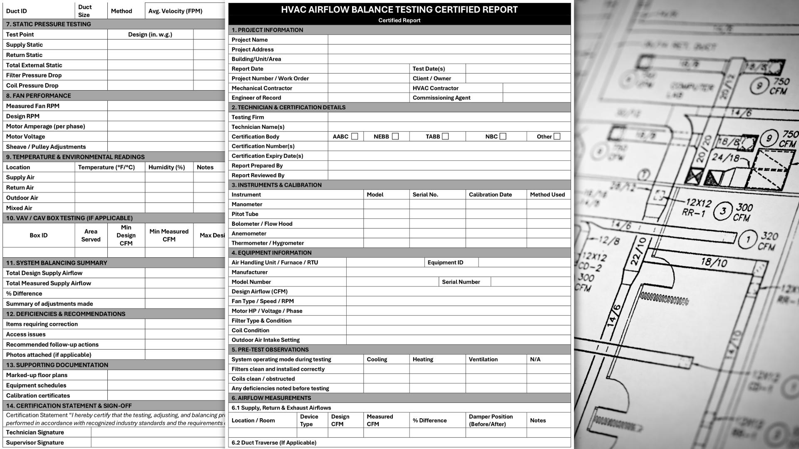

Air Balancing Report
With over 20 years of expertise in HVAC and air balancing, we provide consulting services for air balancing reports.
Air Balancing Report Template
Every HVAC design is unique, so each air balancing report must be tailored to the specific project. We develop project-specific air balancing templates based on design drawings and specifications. These templates guide technicians on the components and parameters that need testing. Completing the report is simple; technicians can enter the field-tested data directly into the designated report template for that particular project.
This method helps keep projects on schedule while ensuring accuracy, compliance, and clear documentation.
Rejected Air Balancing Reports
In cases of rejected air balancing reports, we conduct a detailed review of the design drawings, specifications, and the rejected report itself. We identify the root causes of the rejection and offer practical, field-ready solutions to address the issues. Our support efficiently facilitates the correction of deficiencies, allowing the project to get back on track with minimal costs and delays.
Our report services are customized to align with your project scope, specifications, and reporting standards, ensuring that you receive accurate, clear, and reliable certified report documentation, regardless of the project size or location.
Frequently Asked Questions
An HVAC Air Balancing Report is a detailed assessment that measures how effectively your heating and cooling system delivers air throughout a home or building. It identifies issues such as uneven temperatures, weak airflow, duct restrictions, or system inefficiencies.
For homeowners and buyers, it improves comfort and energy efficiency. For building managers, contractors, and builders, it verifies that the system is performing as intended, aligns with design specifications, and supports proper documentation for inspections, commissioning, and post‑installation verification.
In some cases, yes. Builders, HVAC installers, and renovation contractors may need a certified report to close permits, meet engineering specifications, or complete post‑installation verification. Even when not required, the report provides valuable documentation for property managers and homeowners.
Most residential assessments take 1.5 to 3 hours, depending on the size of the home, number of vents, and accessibility of the system. Larger homes, multi‑zone systems, and commercial or multi‑unit buildings may require additional time. We always provide an estimated timeframe before starting so homeowners, building managers, and contractors can plan accordingly.
Yes. Even newly installed systems can have airflow imbalances caused by duct layout, equipment settings, or construction changes. An air balancing report ensures the system is delivering air as designed from the start.
For builders and contractors, this documentation is valuable for commissioning, warranty validation, and meeting project requirements. For homeowners and buyers, it provides peace of mind and protects the investment in new HVAC equipment.
You’ll receive a detailed, easy‑to‑understand report that includes airflow readings, temperature measurements, system pressure, and any issues or inefficiencies identified during testing. The report is written clearly enough for homeowners to follow, yet thorough enough for contractors, builders, and building managers to use for technical review, compliance, or corrective planning.